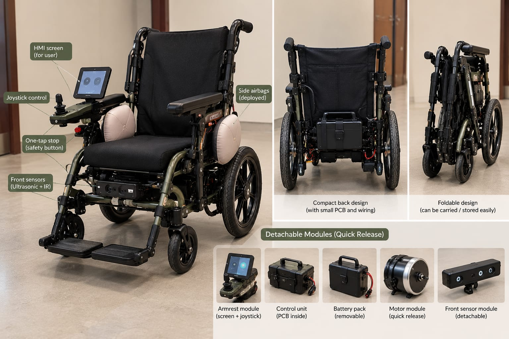

There is still a lot to build.
SAKHAA has come a long way from its first idea. Now the focus is on turning what we have built into something more reliable, practical and accessible.

BUILD IT BETTER
From a working system to a better product.
A prototype proves that an idea can work. The next challenge is making it work well.
We want to improve the physical design of SAKHAA, reduce unnecessary complexity and make the overall system cleaner and more reliable.
Hardware arrangement, wiring, component placement and product finish all need to move closer to something that can be used in the real world.
SAFETY
Make safety part of everything.
Safety is one of the areas we want to continue developing as SAKHAA moves forward.
The airbag system, obstacle detection, tilt and fall monitoring, emergency alerts and other protective systems need further development and testing.
The goal is not simply to add more safety features, but to consider safety throughout the design of the wheelchair.
SMARTER DECISIONS
Make SAKHAA understand more.
The system should understand what the user wants, what is happening around them and how the wheelchair should respond.
USER INPUT
Better understanding of voice, gesture, touch and joystick commands.
ENVIRONMENT
Better awareness of obstacles, movement, orientation and surroundings.
HEALTH
Bringing health-related information into the system when it can support safer decisions.
RESPONSE
Making the system's response more appropriate to what is happening.
REAL-WORLD TESTING
Build it with people, not assumptions.
A wheelchair can look impressive in a demonstration and still behave very differently in someone's everyday life.
One of the next steps is to understand how SAKHAA performs in real environments and to learn from the people who would actually use it.
Users, caregivers and different everyday situations should continue to shape how the product develops.
ACCESSIBILITY
Keep affordability at the core.
More technology should not automatically mean a less accessible product.
SAKHAA is being developed with affordability as an important part of the product direction.
The aim is to bring intelligent mobility, connected support and advanced safety closer to the people who need them.
From what we have built to what people can depend on.
There is still a long way to go. More testing. More learning. More building.
We're still building.
And every step forward brings SAKHAA closer to the people it was built for.